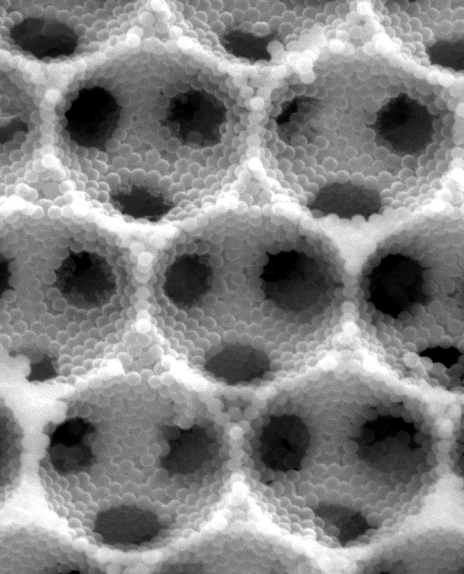
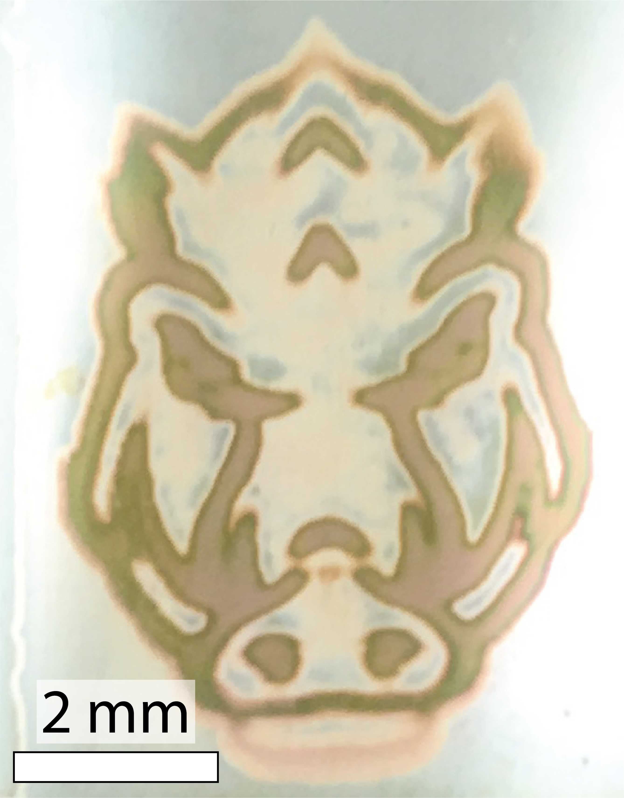

We study the performance advantages provided by structuring hierarchical functional materials. To this end, we develop methods to synthesize rationally-engineered materials for optical and electrochemical applications. We also devise simulations and charaterization techniques for operando characterization and optimization of these materials.

Recent Group Pubs
- DesCarpentrie, A.G. and Coridan, R.H.* Characterizing mass transport effects for photoelectrochemical reactions in a nanostructured, light-trapping photoelectrode, accepted, ACS Electrochemistry (2026)
- Muhanga, J.J. and Coridan, R.H.* An effective medium approximation for the refractive index of stratified metal oxide composites synthesized by atomic layer deposition, Journal of Vacuum Science & Technology A, 44, 022408 (2026)
- DesCarpentrie, A.G. and Coridan, R.H.* Harnessing emergent multiple scattering resonances in a photonic glass structure for photoelectrochemical energy conversion, Chemical Science 16, 14186-14195 (2025)
Recent Exclamations
- July 2026 - Congratulations to Joel Muhanga (Ph.D., MSEN) and Rishabh Srivastava (M.S., MSEN) on defending and completing their degrees!
- May 2026 - Congratulations to Matt Hughes (B.S., Chemistry) on defending his Honors thesis!
- May 2025 - Congratulations to Grecia Alvarado Munoz on defending her M.S. thesis. Welcome to the Ph.D. program!
- May 2025 - Welcome to new student Rishabh Srivastava (MSEN Ph.D. student)!
- September 2024 - Thank you to the DOE Solar Photochemistry Program for continued funding in the program! We look forward to making new photoelectrode materials going forward.